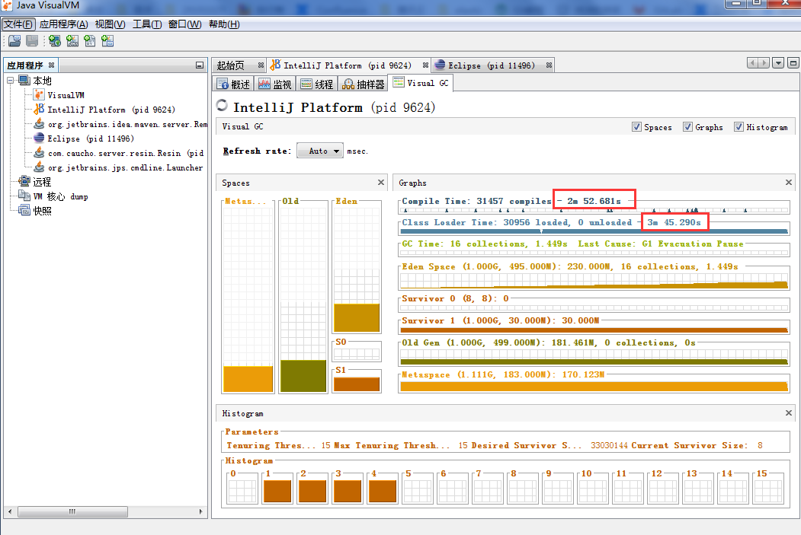
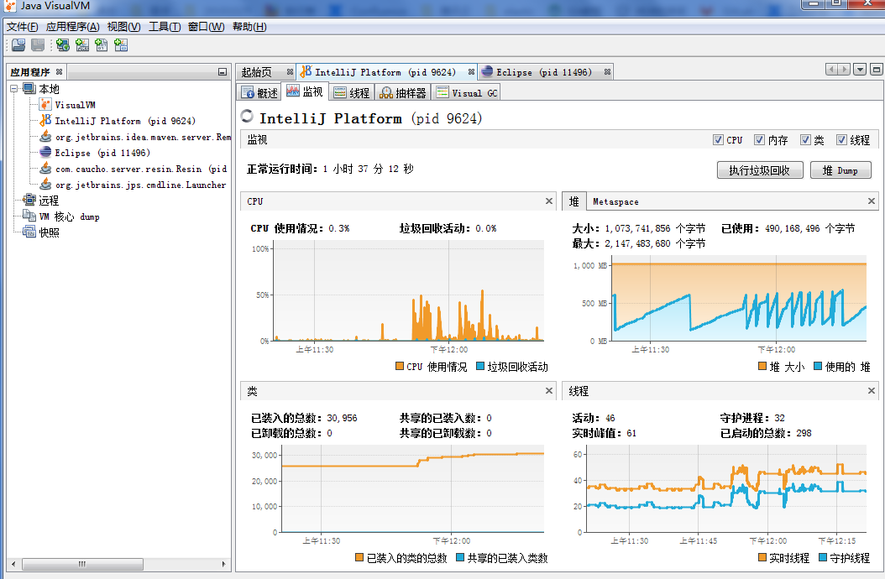
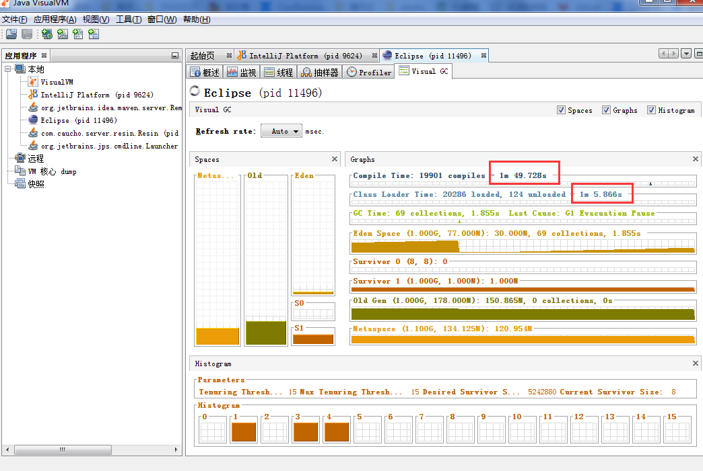
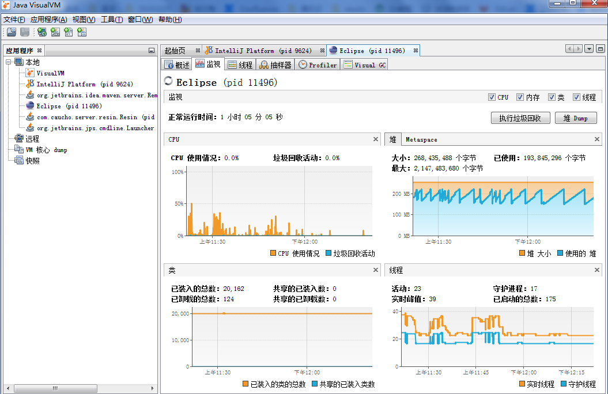

昨天对比了下IDEA和Eclipse的启动速度，发现IDEA启动真的是好慢啊！！！
电脑配置：8G win7
IDEA启动配置
-Xms1024m
-Xmx1024m
-Xmn500m
-XX:MetaspaceSize=248m
-XX:MaxMetaspaceSize=512m
-XX:PermSize=248m
-XX:MaxPermSize=512m
-XX:ReservedCodeCacheSize=512m
-Xverify:none
-Xnoclassgc
-XX:+AlwaysPreTouch
-XX:+UseG1GC
-XX:+UseStringDeduplication
-XX:AutoBoxCacheMax=20000
-ea
-server
-Dsun.io.useCanonCaches=false
-Dsun.awt.keepWorkingSetOnMinimize=true
-Djava.net.preferIPv4Stack=true
-XX:+HeapDumpOnOutOfMemoryError
-XX:-OmitStackTraceInFastThrow
-Dfile.encoding=UTF-8
-XX:+DisableExplicitGC
-javaagent:E:\IDEA\installl\JetbrainsCrack-2.7-release-str.jar
-javaagent:E:\IDEA\installl\JetbrainsCrack-2.7-release-str.jar是破解文件路径，要改成自己的。

eclipse启动配置
-vm
E:/java64/java8/bin/javaw.exe
-startup
plugins/org.eclipse.equinox.launcher_1.5.500.v20190715-1310.jar
--launcher.library
C:/Users/user/.p2/pool/plugins/org.eclipse.equinox.launcher.win32.win32.x86_64_1.1.1100.v20190907-0426
-product
org.eclipse.epp.package.jee.product
-showsplash
org.eclipse.epp.package.common
--launcher.defaultAction
openFile
--launcher.appendVmargs
-vmargs
-Dosgi.requiredJavaVersion=1.8
-Dosgi.instance.area.default=@user.home/eclipse-workspace
-XX:+UseG1GC
-XX:+UseStringDeduplication
--add-modules=ALL-SYSTEM
-Dosgi.requiredJavaVersion=1.8
-Dosgi.dataAreaRequiresExplicitInit=true
-Xms256m
-Xmx1024m
-XX:PermSize=256M
-XX:MaxPermSize=512M
-XX:ReservedCodeCacheSize=256m
-XX:+TieredCompilation
-XX:MetaspaceSize=256m
-XX:MaxMetaspaceSize=512m
--add-modules=ALL-SYSTEM
-Declipse.p2.max.threads=10
-Doomph.update.url=http://download.eclipse.org/oomph/updates/milestone/latest
-Doomph.redirection.index.redirection=index:/->http://git.eclipse.org/c/oomph/org.eclipse.oomph.git/plain/setups/E:/java64/java8/bin/javaw.exe 是jdk路径，其他路径和链接保持默认即可，修改的是-X开头的jvm参数。

个人并不建议把-Xms和-Xmx设置为一样大。假如同时启动了tomcat，并且tomcat也设置了-Xms和-Xmx，内存不足的时候，tomcat无法从分配给IDEA的内存里获取可用的内存。所以，-Xms应该设置为启动该应用所需的最大内存即可。比如上面第二张图第二个分析图（堆）那里，分配给了IDEA1024m（橙色线），但是实际启动过程中，最多也就用了700m左右（蓝色线）。所以应该设置-Xms=700m，-Xmx=1024。
以上为个人分析，欢迎各位大佬指教，我将在线回复！